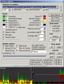
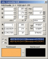

deutsch
TrafMon 1.5
{kind=link}
Trafmon options and two sample layouts
trafmon15_bin.zip - 613 kB (
trafmon15_src.zip - 698 kB (Delphi 2010) - (
TrafMon.txt
DiskBuddy 0.8


DiskBuddy main Window and DiskBuddy showing an NFTS MFT-record
diskbuddy08_bin.zip - 795 kB (
diskbuddy08_src.zip - 1,334 kB (Delphi7) - (
DiskBuddy.txt
SonoGram 3.5

SonoGram showing the face from Aphex Twins 'equation'
old version screenshot
{kind=link}
sonogram35_bin.zip - 340 kB (
sonogram35_src.zip - 1.17 MB (Delphi 7) - (
readme.txt
Defragger 3.9alpha

Defragger in Aktion
defragger39a_bin.zip - 113 kB (
defragger39a_src.zip - 142 kB (written in 100% C) - (
readme.txt
Kopy 2.0

kopy in action on a scratched CD
- copy program with adjustable cache and resume mode
- cache size adjustable during copy-progress
- resume partial files
- adjustable retry value on read-errors (for example useful on scratched CDs)
- skip blocks on read error/write NULL-blocks
- remaining time display/speed display/speed graph
- copy including sub-directories, wildcards allowed (*.exe)
- physically delete (overwrite) content of files (more about physically deleting files)
kopy20_src.zip - 18 kB (Delphi 7) - (
readme.txt
AutoEditor 1.1

AutoEditor with some generated java code
autoeditor11_bin.zip - 314 kB (
autoeditor11_src.zip - 353 kB (Delphi 7) - (
readme.txt
RegSR 2.0

RegSR in Aktion
- Search and Replace/Delete strings in the Windows-Registry-Database
- fast Search because of skipping mirrored branches of the registry
- first search, then select from results, which branches/keynames/key-values to replace/delete
- search for REG_SZ, REG_EXPAND_SZ, REG_MULTI_SZ registry-types
readme.txt
ExitWin 2.0

ExitWin countdown
- shutdown/reboot/logoff Windows or shutdown with a timer
- or use it from commandline ( exitwin.exe /? )
- same as the WinXP-Utility "shutdown /?"
exitwinsrc.zip - 13 kB (VB 6) (
ColorConverter 2.0
{kind=link}
Farb-Konverter in action
- color converter from/into four formats
- select/change/show colors
- colors-formats: RGB[0..1]/RGB[0..255]/hexadecimal/windows-color-value(0..16777215)
- form to import to VBA (Excel/Word/Corel) or VB6
colorconvsrc.zip - 6 kB (VBA) (
links
Sequoia View WinDirStat
BartPE
Ninite multi installer
SysInternals